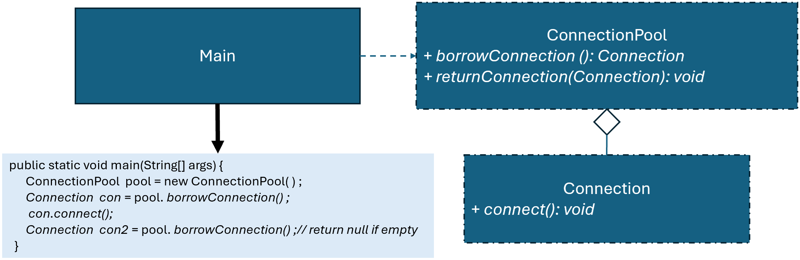

優點
缺點
總評
本場互動有程序設計與解釋（主要為TO2、TO3、CE3），但整體明顯以獲得直接解決方案為主，且沒有主動驗證、比較或懷疑AI的資訊，缺乏高層次自我反思、監控和共同建構意圖。互動停留於表面修正與直接任務導向，需加強批判性思維與更主動的探索行為。
new Thread(() -> {
try {
System.out.println("Trying to borrow a connection...");
Connection conn2 = pool.borrowConnection();
conn2.connect();
} catch (InterruptedException e) {
e.printStackTrace();
}
}).start();這段是在模擬啥
你寫一個完整的程式給我看看
import java.util.LinkedList;
class Connection {
public void connect() {
System.out.println("Connected successfully.");
}
}
class ConnectionPool {
private LinkedList pool = new LinkedList<>();
public ConnectionPool(int maxSize) {
for (int i = 0; i < maxSize; i++) {
pool.add(new Connection());
}
}
public synchronized Connection borrowConnection() throws InterruptedException {
if (pool.isEmpty()) {
wait();
}
return pool.poll();
}
public synchronized void returnConnection(Connection conn) {
pool.add(conn);
notifyAll();
}
}
public class Main {
public static void main(String[] args) throws InterruptedException {
ConnectionPool pool = new ConnectionPool(1);
Connection conn1 = pool.borrowConnection();
new Thread(() -> {
try {
System.out.println("Trying to borrow a connection...");
Connection conn2 = pool.borrowConnection();
conn2.connect();
} catch (InterruptedException e) {
e.printStackTrace();
}
}).start();
Thread.sleep(2000); // 模擬連線使用時間
pool.returnConnection(conn1);
}
}
!@#$報告
新設計有何優點?
這個程式是在做一個可以等待的連線池，重點放在「資源不夠時不要直接失敗，而是先等」。
一開始會先建立固定數量的 Connection 放進 pool。當呼叫 borrowConnection() 時，如果 pool 還有東西，就直接拿；但如果已經被拿光，就會呼叫 wait()，讓執行緒暫停，不會繼續往下跑。
等到有其他地方呼叫 returnConnection() 把連線放回 pool，會順便執行 notifyAll()，把正在等待的執行緒叫醒，讓它們可以重新嘗試拿資源。
用 main 的流程看：
pool 大小是 1
主執行緒先拿走 conn1
另一個 thread 想拿 → 發現 pool 空 → 進入等待
過 2 秒後主執行緒把 conn1 還回去 → 呼叫 notifyAll()
等待中的 thread 被喚醒 → 成功拿到 connection → 繼續執行
這樣的寫法和一般「拿不到就回傳 null」不同，它是直接把等待機制寫在 pool 裡面，外部使用的人不用自己處理失敗情況，程式會比較單純。
整體來說，這個設計讓資源使用變得比較穩定，在多執行緒情況下也不容易出錯。特別是像連線這種一定要拿到才能繼續的資源，用等待的方式會比直接失敗更合理。!@#$
擴展 ConnectionPool，當沒有可用連線時，應等待其他執行緒歸還連線，而不是立即返回 null。
請檢視程式碼介面是否違反 Object Pool 模式，並撰寫報告，討論新設計有何優點?

public class Main {
public static void main(String[] args) throws InterruptedException {
ConnectionPool pool = new ConnectionPool(1);
Connection conn1 = pool.borrowConnection();
new Thread(() -> {
try {
System.out.println("Trying to borrow a connection...");
Connection conn2 = pool.borrowConnection();
conn2.connect();
} catch (InterruptedException e) {
e.printStackTrace();
}
}).start();
Thread.sleep(2000); // 模擬連線使用時間
pool.returnConnection(conn1);
}
}
並修改其他程式，使得執行輸出：